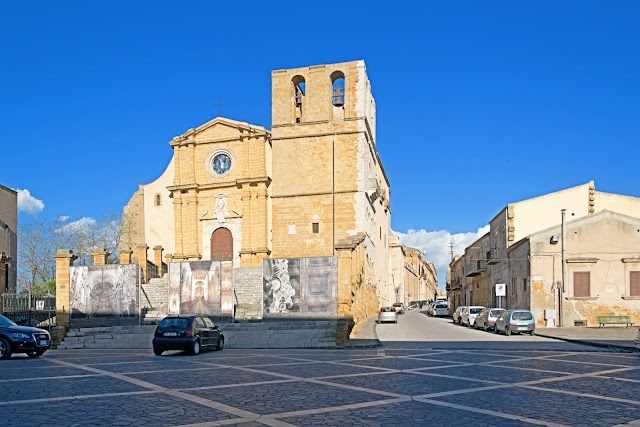
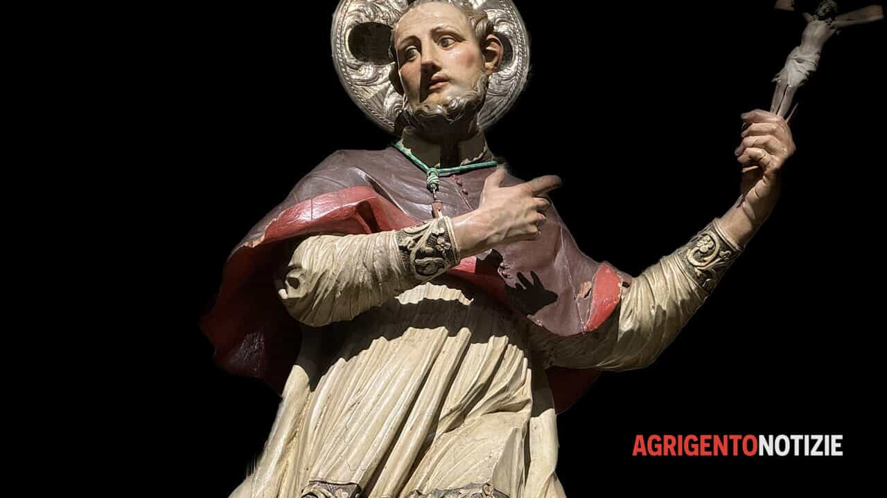
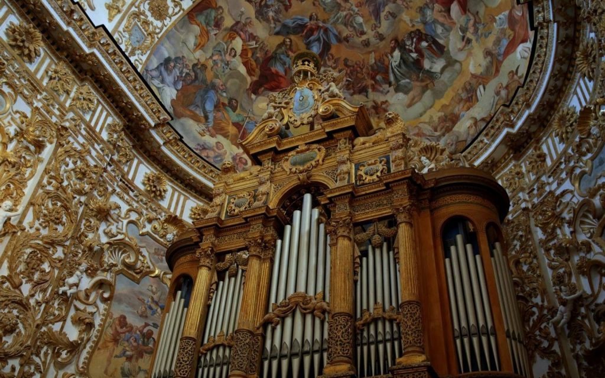

Agrigento
Oltre alla Valle dei Templi, Agrigento è conosciuta per la leggenda di Piazza San Gerlando. Secondo la leggenda, in questo luogo avvenne il miracolo della conversione del signore saraceno ad opera di San Gerlando, il quale riuscì a scacciare le antiche ombre del paganesimo. Si narra inoltre che la piazza sia protetta dal santo contro i terremoti e le frane.
La Piazza San Gerlando si trova nel cuore del centro storico di Agrigento, ai piedi della monumentale Cattedrale dedicata al santo patrono. È un punto panoramico e storico importante, che fa parte dell'antico quartiere medievale del Colle di Girgenti, collegandosi alle aree più caratteristiche della città antica. La piazza è circondata da edifici storici, tra cui la Cattedrale di San Gerlando, che domina la scena con la sua imponente facciata e il campanile. La piazza è un luogo di ritrovo per residenti e turisti, offrendo una vista spettacolare sulla città e sul mare. È anche un punto di partenza ideale per esplorare le stradine del centro storico, ricche di storia, cultura e tradizioni locali.


Nei tempi antichi, quando in Sicilia c’erano gli Arabi, che avevano imposto la fede musulmana, a Girgenti viveva un terribile Drago che terrorizzava gli indifesi cittadini. Il Drago impose agli Agrigentini di consegnargli ogni giorno una giovane vergine per divorarla. Pertanto ogni mattina una giovane veniva sorteggiata e consegnata alla bestia per placarne l’ira. Il Papa seppe del fatto e mandò a chiamare S. Gerlando e il re normanno Ruggero perché liberassero la Sicilia dagli infedeli e Agrigento dal temibile Drago. Mentre Ruggero conquistava città dopo città, San Gerlando ad Agrigento convertì molti al cristianesimo e appena seppe del Drago e delle sue minacce assicurò il suo intervento.
La sorte volle che fosse estratta la vergine figlia del re Ruggero e tutto era stato predisposto per consegnarla alla feroce belva. San Gerlando decise quindi di sfidare il Drago, che a sua volta catturò e incatenò il Santo con pesanti catene e credette di avere vinto la sfida, ma S. Gerlando, miracolosamente, si liberò con un solo gesto delle catene e, preso un capello della Madonna – che la stessa Madre di Dio gli aveva dato – incatenò con quello il Drago. Dopo aver usato tutte le proprie forze per tentare di spezzare il capello, il Drago, sfinito, dovette accettare la sconfitta. Così San Gerlando imprigionò per sempre il Drago e restituì sana e salva a Ruggero la figlia. Grande fu la gioia ad Agrigento e tanti altri dopo questo miracolo riconobbero la potenza dell’Altissimo che operava – e ancora opera – attraverso il suo umile servo S. Gerlando, patrono di Agrigento.

Scansiona il codice QR per raggiungere Piazza San Gerlando.